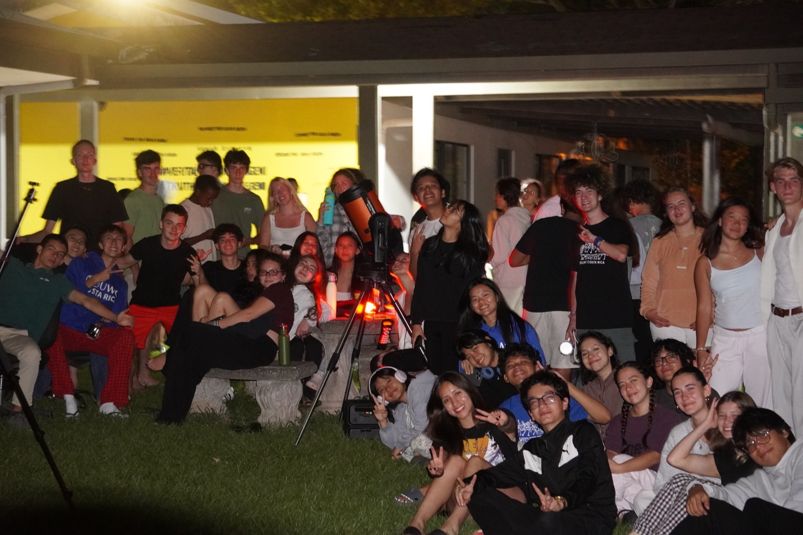
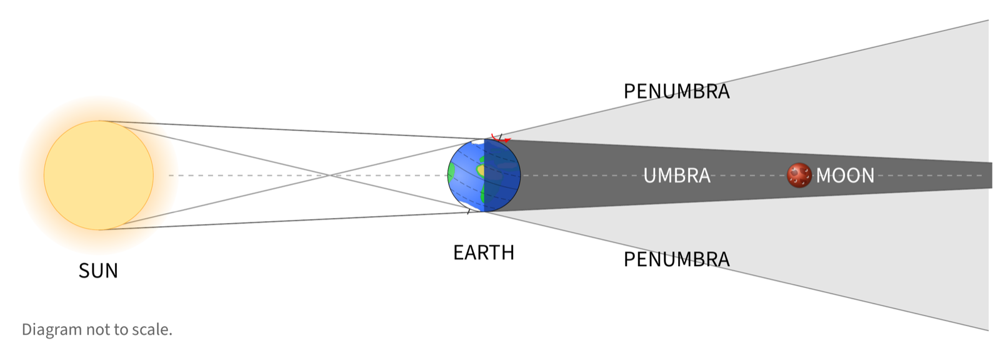
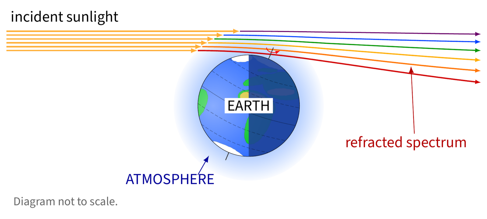
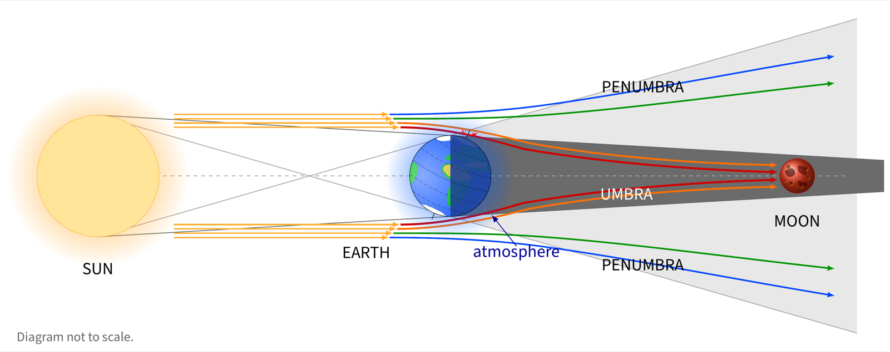

Setup
This is one of those activities I cannot plan into the curriculum. A lunar eclipse happens when it happens, and if I have the opportunity to experience one with students, I take it. The boarding-school context made this possible. I did not need to organise a trip, arrange transportation, or ask students to return to campus late at night. They already lived at the school. I set up my own telescope, told them about the eclipse, and asked whether they wanted to stay up to observe it.
This was a partial eclipse, Costa Rica local time: the partial phase began at 20:33, reached its greatest extent at 22:12, and ended at 23:51. I planned to be out with the telescopes around the 22:12 maximum, weather and cloud cover permitting.
What Happened
Around 50–60 students came, including several who were not taking physics. For almost two hours the sky stayed clear. Students looked through the telescope, changed eyepieces, refocused it, took photographs, and talked about what they could see. About five minutes before totality, clouds rolled in over Santa Ana and covered the Moon for half an hour.

Why Does a Lunar Eclipse Happen?
Earth passes directly between the Sun and the Moon, and Earth's own shadow falls across the Moon instead of empty space. That shadow isn't a single uniform darkness, it has two distinct regions. The Moon first enters the faint outer penumbra, where Earth blocks only part of the Sun's disk, and then moves partly into the much darker umbra, where Earth blocks the Sun completely.

Because this was a partial eclipse, only part of the Moon actually crossed into the umbra. The rest stayed in the penumbra, or outside the shadow entirely, which is exactly why the portion outside the umbra stayed so much brighter than the shadowed part all night.
Why Does the Moon Turn Red?
The umbra is Earth's shadow, but it isn't perfectly dark. Some sunlight still reaches the Moon inside it, bent there by Earth's own atmosphere, and that bending is the same refraction from Refraction, Part I, happening on an astronomical scale instead of at a bench with an acrylic block.

Two things happen to sunlight at once as it grazes through Earth's atmosphere at sunrise and sunset all around the planet's rim. Blue and violet light scatter away in every direction far more strongly than red and orange do, the same wavelength-dependent scattering that makes the daytime sky blue in the first place. What's left of the beam, dominated by red and orange, keeps travelling and gets refracted, bent inward toward Earth's shadow rather than continuing in a straight line.

That refracted red and orange sunlight is bent by just enough to land inside the umbra, the region a straight-line ray could never reach, while the blue and green light that isn't bent as sharply passes on into the penumbra and beyond, missing the Moon inside the umbra entirely. The eclipsed Moon is lit by every sunrise and sunset happening on Earth at that moment, filtered down to its reddest light and focused into Earth's own shadow, which is exactly why totality gives the Moon its characteristic copper-red glow instead of going fully dark.
Field Notes
This is one of those moments that reminds me how much learning happens in unplanned situations. Not every meaningful experience needs a worksheet or an assessment. This was a proper experiential activity: we were outside the classroom, there was nothing to submit afterward, everyone could participate, and the actual astronomical event was happening above us. There was plenty of physics to discuss, the positions of the Sun, Earth, and Moon, shadows, light, and why the Moon changed colour, but it did not need to become a formal lesson for that learning to happen. Some opportunities cannot be scheduled neatly into a unit plan. When they appear, the educational value can come from simply recognising the opportunity and letting students experience the physics directly.